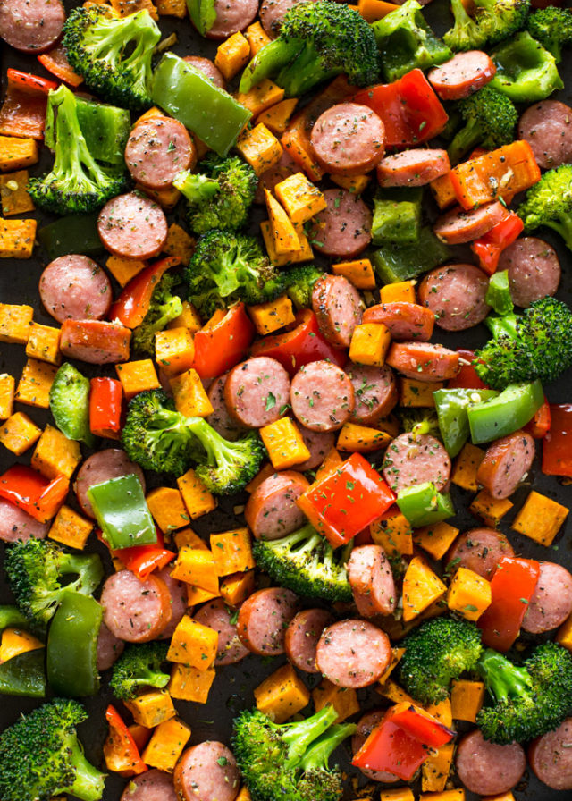

Sheet Pan Sausage and Peppers

Description
This easy recipe is perfect for a quick weeknight meal. Just cut up
some sausage, peppers, potatoes, and broccoli, place in the oven for about 25 minutes and
dinner is ready.
Ingredients
- 12-16 ounces Smoked Turkey or Chicken Sausage
- 2 cups sweet potato
- 2 cups broccoli florets
- 1 cup bell pepper
- 2 cloves garlic minced
- 2 tablespoons olive oil
- 1 tablespoon Italian seasoning
- 1/2 teaspoon salt
- 1/2 teaspoon black pepper
Steps
- Pre-heat oven to 400F.
- Slice the sause into 1" rounds. Dice the sweet potatoes into small 1/2" cubes
- Add the sausage, veggies and minced garlic to a large baking sheet. Drizzle with
olive oil and sprinkle with the Italian spices or your favorite spice blend. Sasoning with salt
and pepper. Toss veggies with your hands util they are fully combied and coated with olive
oil and spices.
- Bake for 20 minutes, flipping halfway. Enjoy with rice, quinoa, in sandwiches or as is!